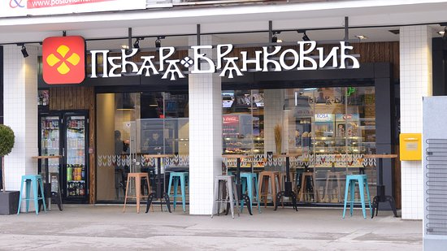
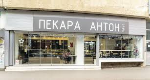

Saradnje

Mega Maxi
Naš dugogodišnji saradnik
Izražavamo veliku zahvalnost Mega Maxiju na kontinuiranim donacijama u vidu namirnica i novčane podrške. Njihova velikodušnost ne samo da osigurava hranu za naše korisnike, već i pruža sredstva za poboljšanje naših usluga i proširenje naše misije. Mega Maxi je neizostavan partner u našoj borbi za poboljšanje kvaliteta života zajednice i naša zahvalnost prema njima je neizmerna.

Idea
Naš dugogodišnji saradnik
Sa srdačnom zahvalnošću, ističemo Ideju kao neizostavnog partnera u našoj misiji pružanja podrške zajednici. Njihove donacije u obliku namirnica i novčane pomoći su neizmerno dragocene i omogućavaju nam da ostvarimo svoje ciljeve. Njihova posvećenost humanitarnim naporima ističe se kao inspiracija i podsticaj za naš dalji rad.

Pekara Brankocić
Naš dugogodišnji saradnik
Izuzetno smo zahvalni Pekari Branković na njihovoj kontinuiranoj podršci i velikodušnim donacijama svežeg peciva. Njihova posvećenost pružanju podrške našoj zajednici neizmerno nam znači i čini razliku u svakodnevnom životu naših korisnika. Pekara Branković je neizostavni oslonac u našim naporima da unapredimo kvalitet života i izražavamo iskrenu zahvalnost na njihovoj podršci.

Pekara Anton
Naš dugogodišnji saradnik
S iskrenom zahvalnošću ističemo Pekaru Anton kao važnog partnera u ostvarivanju naših humanitarnih ciljeva. Njihove redovne donacije svežeg peciva predstavljaju dragoceni doprinos našoj misiji podrške zajednici. Pekara Anton nas inspiriše svojom velikodušnošću i podrškom, čineći našu zajednicu boljim mestom za sve.